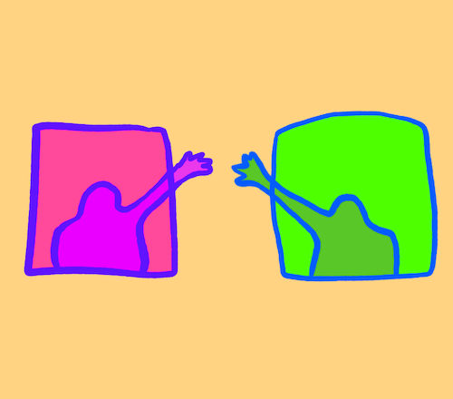

Video Tools:
A review of tools for meeting online

We have suddenly found ourselves in a situation where everything involving other people needs to be remote.
How do we choose our tools?
Right now I'm prototyping online classes for GenieLab and teaching an online class with The School of Machines, Making, and Make-Believe, so I spent some time researching online video tools for learning. Here are my results.
Choosing a tool
Here some things to consider when choosing a tool for video calls: price, security, privacy, number of participants, ease of use, stability, accessibility, and internet consumption.
You also might want features like screen sharing, breakout rooms, chat, or an automatic recording of your call.
Popular Free Tools
| Name | Users | Viewers | Why use? | Problems |
|---|---|---|---|---|
| Jitsi | 50 | n/a | FOSS; Phone | CPU-heavy? |
| Google Meet | 250 | 100K | CC; Phone | Nonprofits only; Privacy |
| Zoom | 100 | n/a | Features | 40m limit; Security; Privacy! |
| Skype | 50 | n/a | Familiar | Account problems |
| Whereby | 4 | 4 | Easy to use | Tiny |
| Google Hangouts | 10 | 150 | CC; Familiar | Privacy |
| Discord | 9? | 50 | Familiar? | Signup overhead |
| Jami | 2? | n/a | FOSS | Crashes; Bad UX |
| 50 | n/a | Familiar | Facebook only; Minimal; Privacy |
Test Notes
I did a test call with some friends recently, here are some quick notes on the different tools
- Jitsi Video Conferencing: Excellent open source option. Very easy to join and set up a call. Connection is unfortunately heavy on my 5 year old laptop. The app unfortunately uses data by default, so turn it OFF if you need. Issues with Firefox. They are working on it? Can join by phone, sounded okay but not great.
- Google Meet: Popular. I couldn’t create a meeting with my normal account, used my nonprofit account. Had to approve each attendee manually. Closed captioning also helped me to slow down and enunciate. Very easy to join and use. Can join by phone but it sounded like everyone was underwater.
- Zoom: Popular, unfortunately with many privacy and security concerns. Downloadable application. Participants can also join in-browser without accounts (though none of our testers managed it). Audio didn’t work when someone tried to join with Firefox. So many features: whiteboard, breakout rooms, speaker or grid view, screen share and remote access. 40 minutes max for free accounts (as many as you want, you can daisy chain them).
- Skype: Popular. Many people already have the software. One of the major problems is that people get locked out of their accounts arbitrarily, and getting access again seems impossible. The solution is to make an entirely new account (or somehow join without an account? ) and this is difficult psychologically and logistically.
- Whereby: (formerly Appear.in) 4 people max. Very easy for new users (no downloads, no accounts). I've spent over a hundred hours trying to help new users troubleshoot Google Hangouts and Skype, so the lack of overhead (click and it works) is invaluable to me. Hilariously the link stays the same so if one meeting runs late the next person might join you.
- Google Hangouts: Group video-conferences, including screen-sharing for 10 guests (150 for non-video).
- Discord: 9 video participants (50 viewers?) and a high user overhead for signup.
- Jami: Free open source option. Download software to computer. The UX is bad, it crashed repeatedly. I’m cheering for this one but it’s not usable for me right now.
- Facebook Messenger Video Chat: 50 video participants, need Facebook account. Very minimal, no screen share.
Thanks to: Ida, Nomi, Isabella, Martin, Ophira, Kofi, Raphaël, Elsa, Lynn, Rebecca, Evelyn, Jean-François for testing help!
More Video Tools
- Adobe Connect - $$$
- Bluejeans - $$$
- BigBlueButton - For learning (not tested yet)
- Kosmi - Chat-room based
- Facetime - 32 video participants, iPhone-only
- GoMeetNow - 100 Participants
- GoToMeeting - $$$
- Microsoft Teams - Part of the Microsoft suite, let me know if you try it?
- Mozilla Hubs - Playful virtual worlds, overwhelming for some people
- Mumble - Voice only (not tested yet)
- Slack - 15 video participants for paid accounts
- Uberconference - Started testing, got stuck
- Webex - Cisco, currently free? (not tested yet)
- Whatsapp - 4 video participants max
Livestream Tools
If you or are hosting single-person lectures, monologues, or solo performances you can try live streaming.
| Name | Users | Viewers | Why use? | Problems |
|---|---|---|---|---|
| Twitch | 1 | 100K+ | Popular | 0 Viewers; Trolls |
| Facebook live | 1 | 100K+ | Audience | Facebook only |
| Youtube Livestream | 1 | 100K | Audience | Need OBS or other |
| Twitter Live | 1 | 100K | Audience | Twitter only |
| Instagram Live | 1 | 100K | Audience | Insta Only |
| Discord | 9? | 50 | Audience? | Signup overhead |
| Autistici | 1 | 100K | ? | Untested |
| Vimeo | 1 | 100K | Quality? | $$$ |
| DailyMotion | 1 | 100K | Quality? | $$$? |

5 tips on video calls
If you want more tips on connecting online, check out this post.
- Welcome people when they arrive. Treat the virtual space as an actual space.
- Plan a buffer period at the beginning of the call (especially the first one) for troubleshooting and getting comfortable with tech.
- If you publically share your join link, uninvited guests may appear to do some performance art or troll you.
- Video on or video off? Video on is great for engagement but is data-heavy and can feel uncomfortable for people.
- Attention and engagement are harder online. Invest in clear structure (goals and steps); great communication; and make time for people to connect.
Additions?
Let me know if you have notes or experiences that could be added to improve this document.
I also wrote about major challenges and new possibilities when teaching online.